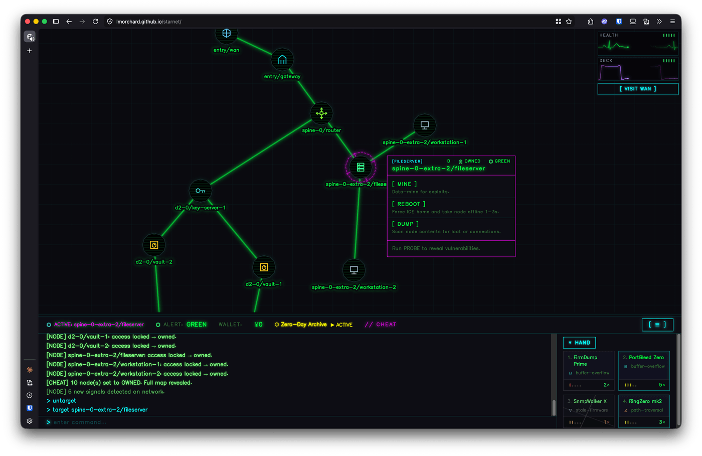

preset
blend
screen
lighten
overlay
color-dodge
normal
base opacity
0.00
severity
0.00
⚡ SHOCK
transient wetware flare
▶ start audio
(needs a click to begin)
idle — click ▶ start audio, then raise opacity